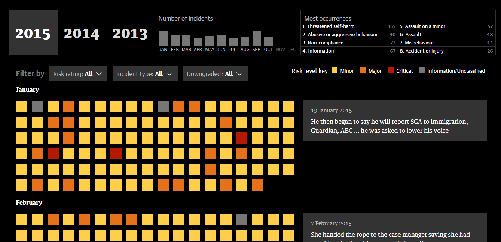
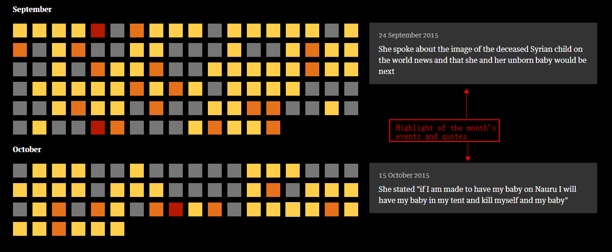

An Analysis of the Data Visulization in the Story of Australian Nauru Files
Author of the Story: the guardian
The story is about: Back in July, 2016. The largest cache of documents was leaked from within Australia’s asylum seeker detention Nauru regime details assaults, sexual assaults and self-harm.
The Guardian analyzed the files and later provided the audience with an in-depth, intereactive data story.
As showed below, each of these squares is an incident report written by staff in Australia’s detention centre on Nauru between 2013 and 2015. The reports are categorised by severity and type.

Read the original story here
- Advantages of this piece of data journalism work:
- Sufficient text explaination:
- 
- Powerful visualization to provide the audience with the big image of Nauru detention center's situation in Australia
- Disadvantages of this story:
- A bit overwhaleming with the amount of information
- Not suitable for normal audience who does not seek for an detail analysis of the Nauru files
- Possible improvements
- Combine data with text explainations